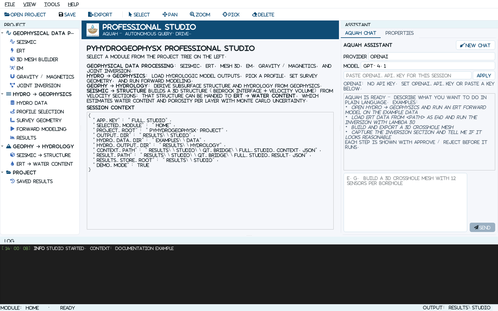
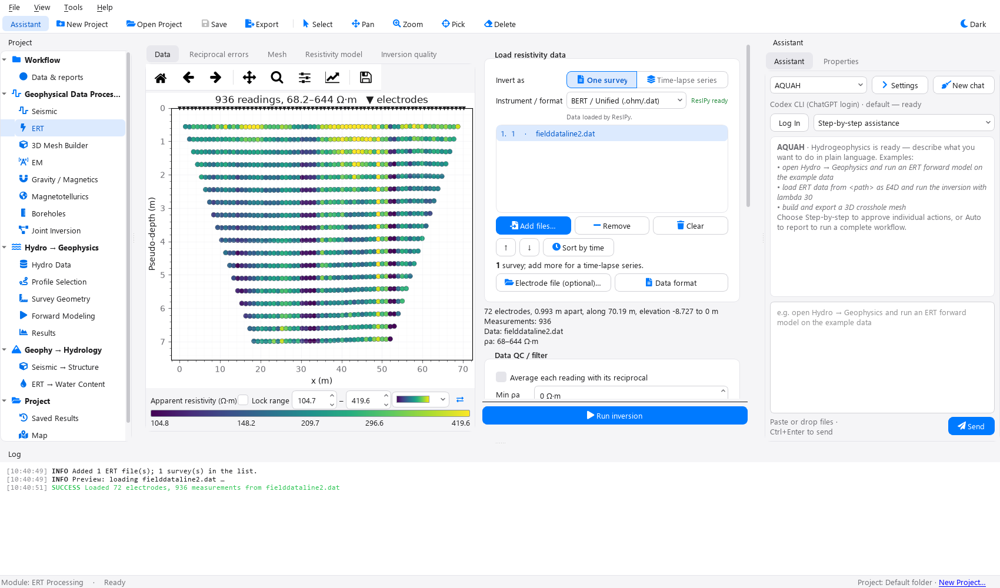

Desktop Studio (Qt)#
PyHydroGeophysX ships two complementary front ends:
The Streamlit web app (Agent Web App) is the agent, report, tutorial, and deployment portal. It runs in a browser and can be hosted remotely.
The Qt desktop studio (
PyHydroGeophysX/qt_apps/) is a local desktop application for hands-on mouse interaction: data processing, first-arrival picking, electrode geometry editing, hydro-to-geophysics profile selection, mesh building, and forward modeling and inversion.
The two exchange small JSON files on disk (the “bridge”), so you can set up a run in the browser and finish the interactive work on the desktop.
Studio at a Glance#
Start from Home#
Home opens with the active Project: its folder, Saved Results, Map, New Project and Open Project. Below it, the active assistant’s Agentic AI workflow: plan, process, evaluate, and report. Choose Start an AI workflow to open Workflow, where you add data, and describe the goal in the assistant panel. The assistant offers step-by-step approval or execution through to a report.
The research task cards follow the model–data loop. Forward: simulate a survey from a hydrologic model (Hydro → Geophysics). Inverse: invert field data with any processing module, then estimate structure and water content with uncertainty (Seismic → Structure, ERT → Water Content). Each card lists the same pages as its group in the navigator. Technical context remains available under Session details. Cards reflow as the window narrows and follow the studio’s Light, Dark or System appearance.
AQUAH: one assistant, two execution modes#
For folder classification, terrain inputs, reasoning, RAG, MCP and detailed processing reports, see Agent Workflow: folders, references and MCP.
The right-hand panel holds the AI assistant. AQUAH, for hydrogeophysics, is the default; pick another at the top of the panel, such as GeoSAGE for geological modelling once it is ready. An assistant that is still being built, or whose packages are not installed, is listed greyed out with the reason. Switching starts a new conversation, gives the Workflow page the input files that assistant takes and the glow its colours, and is remembered. Adding an assistant is described in Adding an assistant.
Use the panel to enter goals and configure the request level, provider, and session API key. Choose Step-by-step assistance to approve individual operations, or Auto to report to execute a complete analysis workflow. Auto mode supports OpenAI and Claude and may incur provider API charges.
The central Workflow → Data & reports page shows inputs, survey ordering, progress, results, report preview and activity. It contains no second prompt or AI settings. If data are missing, AQUAH retains the goal: add files by role in Workflow and send continue in the assistant. Time-lapse surveys can be moved up or down before execution.
While AQUAH runs, the studio shows that the agent, not you, is doing the work. A soft glow of blue, purple, pink and orange flows round the central area; it turns a steady orange while AQUAH waits for you, and flashes green (or red) as the run ends. The Workflow banner shows AQUAH’s orb, what it is doing and a running clock, and the Live tab lists every step it decided on as it happens: why the controller chose it, the module it worked in, how long it took, what it found and the figures it wrote. Between steps the tab shows AQUAH choosing the next one. The run stays on this page; it no longer switches the studio from module to module, unless you tick Also bring each module to the front as it runs. With Approve each step before it runs, or when a step needs a decision, the question and its buttons appear in the timeline. The chat narrates the same steps, and the raw event stream is still in Raw log.
Across the top of the Live tab runs the route: the steps taken, in the assistant’s colours, the one running with a ring turning round it, and the steps still between the run and its report as hollow stops on a dashed line. The route ahead is the run’s own projection from the data it has, redrawn after every step, so it changes when the assistant takes a different turn; click a stop to scroll to its step. Beside the steps, the newest figure the run has written is shown large as soon as it is written, with the earlier ones in a strip beneath (click to look again, double-click to open). When the run ends, a card at the foot of the timeline says how it went, how long it worked, how many steps, figures and files it produced, what to check before relying on the result, and offers Read the report and Open output folder.
While the assistant chooses its next step, its reasoning appears under “choosing the next step” as the model writes it, word by word, and becomes the step’s “Why” once the step starts. The banner counts the tokens the run’s model calls have used and their cost, estimated from the provider’s list prices (for example “12.4k tokens · ≈$0.03”); the finish card repeats the total.
Below the timeline, while a run goes, you can steer it. Pause after this step holds the run before its next step - the step that is running finishes first, since an inversion stopped half-way is of no use - and Resume lets it carry on. A note typed there (“use lambda 20”, “leave the seismic line out”) is read before the assistant’s next decision: it appears in the timeline as yours, and once read, with what the assistant decided and any setting it changed. Notes can change the run’s adjustable settings (inversion parameters, thresholds, the number of realizations…), never a file. A run without an API key has no model to read notes; it says so, and pause and stop still work.
Every run is recorded beside its results as live_replay.json. Replay
this run on the finish card, or Replay a run… under the Workflow page for
an earlier one, plays it back in the Live tab: play, pause, speed (0.5× to
8×) and a slider to scrub, with the run’s own clock. Long waits are shortened
so a replay is quick to watch; nothing is recomputed and no model is asked
anything. Save frame writes the Live tab as it looks at that moment to a
PNG in the run’s folder, for a talk or a paper.
The studio has a light and a dark appearance. Choose one in View → Appearance (Match System, Light or Dark) or with the day/night switch at the right end of the toolbar; the choice is remembered, and Match System follows the operating system. Plots stay on a light canvas in either appearance, so traces drawn in black and colormaps read the same way.
During execution, use Stop in Workflow to cancel. Each attempt has an independent output directory; partial files and inputs remain available for retry. Completion, interpretation, or errors appear back in AQUAH, with reports and files in the center. Use File → Save Runs to Project to retain runs in project history. Report availability depends on the workflow and installed dependencies. Keys are passed through stdin and are not included in saved workflow configuration.
Watch the updated Qt interface walkthrough:


The Studio home screen. The project tree is on the left, the active scientific module is in the center, AQUAH Chat and Properties are on the right, and the activity log is at the bottom.#
The main window has six working areas:
Project tree – select Seismic, ERT, 3D Mesh Builder, EM, Gravity / Magnetics, Magnetotellurics, Hydro -> Geophysics, Seismic -> Structure, or ERT -> Water Content. Multiple tree entries under Hydro -> Geophysics open different stages of the same guided module.
Module workspace – plots, maps, model viewers, and step-by-step controls for the selected method.
AQUAH Chat / Properties – ask the assistant to prepare an action, or inspect the current context and module results as JSON.
Toolbar – Open, Save, Select, Pan, Zoom, Pick, Delete, and Export. Pick and Delete act on compatible plots in the active module.
Log – progress messages, loaded-file summaries, warnings, output paths, and backend errors. Check this panel first when a run does not start.
Status bar – the current module and whether the interface is ready or busy.
Download the Desktop App#
Prebuilt bundles for Windows and macOS are published on GitHub Releases. Each platform has two variants, so you can pick what fits your machine:
Download the Desktop Studio (Windows / macOS)
Bundle |
What it includes |
|---|---|
|
Windows. Load, view, QC, pick, edit geometry, and export data in every module. Small download; starts fast. |
|
Windows. Everything in light, plus the geophysics engines (PyGIMLi, SimPEG, PyVista/VTK): forward modeling, inversion, and the 3D mesh viewer work out of the box. Much larger download. |
|
macOS. Same feature set as the Windows light build. |
|
macOS. Same feature set as the Windows full build. |
After unzipping, run PyHydroGeophysX-Studio.exe inside the extracted folder
(Windows) or open PyHydroGeophysX-Studio.app (macOS).
Note
In the light bundles the heavy engines are left out on purpose, so forward modeling, inversion, and the 3D mesh viewer show an install message instead of running. Choose the full bundle, or install from source, for the complete feature set.
Note
The macOS bundles are not code-signed. If macOS blocks the first launch,
right-click the app and choose Open once, or clear the quarantine flag with
xattr -cr PyHydroGeophysX-Studio.app.
Install and Run from Source#
The studio needs PySide6 and pyqtgraph in addition to numpy and pandas:
pip install -r requirements-desktop.txt
# or, as an extra:
pip install "pyhydrogeophysx[desktop]"
Optional packages add features:
pygimli: real forward modeling and inversion (ERT, SRT, TDEM, FDEM, gravity). Without it, the Hydro module still exports a survey configuration JSON.pyvista,pyvistaqt,vtk: the 3D mesh viewer.simpeg: gravity and magnetics 3D inversion.scipy: gridding and interpolation in several modules.
Launch the studio:
python -m PyHydroGeophysX.qt_apps.launcher
# open directly into a module:
python -m PyHydroGeophysX.qt_apps.launcher --module hydro_geophysics
# attach to a bridge context written by Streamlit:
python -m PyHydroGeophysX.qt_apps.launcher --context results/streamlit_workflow/qt_bridge/full_studio_context.json
If the package is installed (pip install pyhydrogeophysx[desktop]), the
pyhydrogeophysx-studio command starts the same application.
Start Without a Terminal#
examples/start_studio.bat opens the studio from a double-click in
Explorer, the desktop counterpart of start_webapp.bat. It needs no activated
environment and no PATH entry: it looks for a Python that already has PySide6
and pyqtgraph, checking its own reusable environment, PYHYDROGEOPHYSX_PYTHON,
an inherited conda environment, the py launcher, and the usual per-user conda
installation folders. Finding none, it creates .venv-studio beside the
repository and installs the desktop extra there, leaving existing environments
untouched. That first run takes several minutes; later runs reuse it.
The console window it opens is the log: startup messages and any error stay visible there, and it closes when the studio does.
examples/start_studio.sh is the macOS / Linux counterpart. Copy it to
start_studio.command to make it double-clickable from Finder. Unlike the
Windows launcher it installs nothing, reporting the pip install command
instead when the dependencies are missing.
Both forward their arguments, so a shortcut can open a specific module:
start_studio.bat --module hydro_geophysics
Note
The desktop extra installs the interface only. Two groups are separate
because they are large: desktop-3d (pyvista, pyvistaqt, vtk)
for the 3D viewers, and geophysics for forward modeling and inversion.
Without them those panels show an install message and the rest of the
studio is unaffected.
pip install "pyhydrogeophysx[desktop,desktop-3d,geophysics]"
Choosing pip or conda#
Install with whichever tool already manages the packages in the environment.
That is not always the tool that created it: an environment made with conda
create whose scientific packages were then installed with pip is a pip
environment for this purpose. Ask it directly:
conda list numpy
pypi in the channel column means pip owns the packages, so use the pip
install line above. A conda channel such as conda-forge means conda owns
them, so install the 3D stack from conda-forge instead:
conda install -c conda-forge pyvista pyvistaqt
The distinction matters most for vtk. Reaching for the other tool installs a
second VTK build alongside the first, and which one loads then depends on path
order. PySide6 also ships its own Qt, so pulling qt6-main in from conda-forge
next to a pip-installed PySide6 puts two Qt runtimes in one environment.
Module keys for --module: home, seismic, ert, mesh3d, em,
gravmag, mt, hydro_geophysics, geo_hydrology, seismic3d.
Your First Studio Run: ERT Inversion#
This walkthrough uses the ERT module because it demonstrates the complete
Studio pattern: load, inspect, QC, configure, run, evaluate, and export. From
a source checkout, use examples/data/ERT/Bert/fielddataline2.dat. You can use
your own BERT/unified, E4D, Syscal, or other supported resistivity file instead.


The ERT Processing module with the bundled BERT survey loaded. The Data tab shows its pseudosection, the electrodes along its top, the plot toolbar above it and the colour range under it; loading, filtering and inversion controls are in the scrollable column on the right, with the Run button pinned under it.#
Step 1 – open the ERT module#
Select Geophysical Data Processing > ERT in the project tree, or launch directly with:
python -m PyHydroGeophysX.qt_apps.launcher --module ert
Step 2 – load and inspect data#
Under Load resistivity data, choose Invert as One survey (or Time-lapse series, below) and select the matching Instrument / format. For the bundled file, choose BERT / Unified (.ohm/.dat).
Click Add files… and select one file, or drop files - or a folder of them - anywhere on the page. Loading runs in a worker thread; the UI remains responsive and the Log reports the number of electrodes and measurements. When a file’s first lines name another format than the one chosen, a line under the format says so with a Read as … button; changing the format reads the file on screen again. A file that reads as fewer than four electrodes or no measurements is refused rather than loaded, and the Run button says why it cannot run.
The Data tab draws the pseudosection, to inspect spatial coverage and apparent-resistivity outliers, with the electrodes as triangles along its top. The panel above the QC settings gives their count, spacing, line length and, when the file has them, elevations; the Mesh tab draws them on the topography.
If electrode positions are stored separately, click Electrode file (optional)…. The Studio accepts an
x, ztable.
Step 3 – apply QC filters#
Set Min rhoa, Max rhoa, and optionally Max error, then click Apply filter. A Max error value of zero disables the error filter. The Log reports how many measurements were retained and removed. Click Reset to return to the original loaded data before trying different thresholds.
Do not use a narrow resistivity range simply to make a smooth-looking plot. Check suspicious points against acquisition notes, reciprocal error, contact resistance, and neighboring measurements before deleting them.
For data measured both ways, the Reciprocal errors tab, beside
Data, plots each pair’s reciprocal error against its mean
resistance with the reciprocal error model fitted through the pairs - one
survey, or in time-lapse mode every survey of the list, coloured first to last
(the series is read in the background). Its Fit to choice fits the model to
all pairs before filtering or only to the pairs the applied filter kept, the
others drawn in grey; the data errors taken from the model, qc_report.txt,
inversion_settings.txt and the run’s figure use the same choice, and Saved
Results shows the same view for the run.
Step 4 – check the mesh and set a-priori zones#
The Mesh tab, between Reciprocal errors and Resistivity model, shows the mesh the next inversion will run on before any time goes into the run. It is built by the same function the inversion uses, from the loaded survey as the run will read it (QC filter and electrode edits applied) and from the mesh settings beside it; in time-lapse mode it is the mesh of the first survey of the series. It is rebuilt when the tab is opened after a setting changed, a moment after a change made while it is open, and on Rebuild. The line under the plot gives the cell counts, the size of the inverted region, the range of its cell areas and the size of the whole mesh, so the effect of a setting can be read off rather than guessed. The Mesh row of the Inversion panel summarises the settings and links to the tab.
The Mesh group at the top of the tab holds every setting of the mesh. Source imports a mesh built elsewhere (Import mesh…, ✕ to go back); an imported mesh describes its own domain, so the settings below it are switched off. A generated mesh is pyGIMLi’s parameter mesh: an inverted region under the electrodes and a coarse outer region around it. Each setting is one of pyGIMLi’s options under a name that says what it does, and plays the same part as a setting of an E4D mesh configuration (see E4D-Style 3-D Meshes); at their defaults the mesh is the one pyGIMLi builds by itself.
Setting |
What it does |
pyGIMLi |
E4D |
Default |
|---|---|---|---|---|
Depth |
How deep the inverted region reaches; auto is 0.4 times the electrode spread. Capping it removes unknowns the data cannot resolve. |
|
fine-zone depth padding |
auto |
Side margin |
How far the inverted region reaches past the end electrodes, in electrode spacings. |
|
fine-zone padding |
2 |
Surface nodes |
Nodes on the surface between two electrodes; more gives smaller cells near the surface. |
|
refinement points |
1 |
Largest cell |
Upper limit on the area of an inverted cell (m²). |
|
fine-zone max volume |
no limit |
Quality |
Smallest angle a triangle may have. Triangle cannot finish much above 34°, so the setting stops there. |
|
TetGen quality |
34° |
Width |
How far the outer region reaches beyond the inverted region, sideways and down, in lengths of the electrode spread. |
|
outer boundary distance |
4 |
Largest cell (outer) |
Upper limit on the cell area of the outer region (m²). |
|
outer-zone max volume |
no limit |
Restore defaults puts them all back. The assistant sets them through
set_params under the names para_depth, para_boundary,
surface_nodes, para_max_cell_size, mesh_quality, outer_width and
outer_max_cell_size, and a value outside a setting’s range is refused rather
than clipped.
By default the view shows the parameter domain, the cells that are inverted. Tick Outer region to see the rest of the mesh as well: the coarse cells pyGIMLi appends around the parameter domain so that the boundary condition sits far from the electrodes. They are part of the forward calculation but are never inverted, and they reach many times further than the section, so the view zooms out to show them. Cell edges switches the cell boundaries on and off.
A-priori zones carry what is known before the inversion - a clay layer from a borehole log, a foundation, the water in a tank. Click Draw zone, click the vertices on the mesh, and click the first vertex again to close the polygon (Esc starts it over). The zone appears in the table at the survey’s median apparent resistivity; set its resistivity there, rename it, and tick Fixed to keep it out of the inversion altogether. Cells counts the cells whose centre lies inside the polygon; where zones overlap, the one lower in the list takes the cell.
Two options below the table decide what the zones do beyond their values; both are off by default.
Mesh follows the zones rebuilds the mesh so that the zone outlines become cell edges, the way E4D meshes its internal boundaries: no cell straddles an outline, so a zone’s value, and a fixed zone, covers exactly the area drawn rather than a staircase of the cells nearest to it. The mesh is rebuilt after every zone that is drawn, moved or removed; changing a zone’s value does not touch the mesh. Only the parts of an outline inside the inverted region are used, so a zone drawn across the ground surface ends at the surface. An outline meets the surface at the nearest surface node, and a vertex within a fifth of an electrode spacing of the surface or of a node is moved onto it, which keeps slivers of tiny cells out of the mesh; each move is well below what the data resolve. It applies to a generated mesh only.
Sharp zone edges drops the smoothness constraint between the cells on either side of an outline - between two zones, or a zone and the ground around it - so the inversion may put a sharp contrast there instead of smearing it out. Use it for a boundary whose position is known from a borehole, GPR or an excavation, even when its resistivity is not. The cell edges it cuts are drawn in black; with Mesh follows the zones they are the outlines themselves. Every engine honours it: the in-house engine and PyGIMLi’s manager through pyGIMLi’s region manager, which leaves no constraint across a marked cell edge, ADTLERT through its structure-guided smoothness, E4D by making each part of the section an E4D zone of its own, linked to none, and R2 and R3t by making each part one of their zones, between which they apply no smoothness.
What a zone does depends on the engine, and the note under the table says so for the engine selected:
In-house Gauss-Newton starts from the zone values and regularizes toward them: the smoothness constraint acts on the departure from the a-priori model, so the contrast at a zone’s edge costs nothing unless the data argue against it. A fixed zone is not inverted. The same holds for every survey of a time-lapse run.
PyGIMLi ERTManager, ADTLERT and E4D start from the zone values but invert every cell, fixed zones included.
R2 and R3t start from the zone values and hold a fixed zone at its value (their
param = 0); the other cells are inverted.The ADTLERT time-lapse backend takes no zone values; the run log says they were not applied. Sharp zone edges still applies to it.
The zones, the two options and the mesh settings are part of the run’s recipe and
of its reproduction script, and the run log lists every zone with the cells it
covered, the outline edges the mesh gained and the cell edges the smoothness no
longer crosses. The assistant sets zones through set_params (zones,
conform_to_zones, decouple_zones) and shows the mesh with
preview_mesh.
Step 5 – configure and run the inversion#
The defaults provide a reasonable first diagnostic run:
Lambda = 20 controls spatial smoothness. Increase it for a smoother model; decrease it only when the data quality and coverage justify more structure.
Max iterations = 15 limits the Gauss-Newton iterations.
Relative error = 0.05 assigns a 5% data error for weighting.
The mesh, its quality (34° by default) among its settings, is set on the Mesh tab (Step 4).
Click Run inversion, pinned under the settings column; while it cannot run, the line above it says why. Follow progress in the bottom Log. While it runs, Pause beside the progress bar freezes the inversion where it stands - in the middle of a forward solve as much as between iterations - and Resume continues it from the same point, with nothing recomputed. A paused run keeps its memory, and closing the studio still ends it. When the run finishes, inspect:
Resistivity model for the recovered section and coverage-aware opacity;
Inversion quality for observed-versus-predicted behavior and convergence;
the Log for the final chi-squared value and saved intermediate paths.
The Colour map swatch under the section’s display controls chooses its colour map, and the arrows beside it reverse it; the section is redrawn in place, keeping its log scale, locked limits, contours and clipping. The choice is kept for the session for each kind of display (resistivity, % change, velocity, EM section and so on), so a run reopened in Saved Results (the Model Viewer) shows the same colours, and every colour-mapped view in the studio offers the same chooser.
Every plot in the studio has the same toolbar above it - Home, Back, Forward, Pan, Zoom, subplot and axis settings, and Save - and every colour scale a Lock range with its lower and upper limit beside the colour map. Unticked, the plot scales itself and the two boxes show the limits in use; ticked, the limits typed in are kept while you step through surveys, time steps, lines, slices or shots of the same quantity, so they can be compared on one scale.
After a run, Run records beside the reproduction buttons opens the run’s
records: its settings (inversion_settings.txt for ERT, run_settings.txt
- the run’s recipe as text - for every other page and for the assistant’s
Workflow runs), the data QC report where the data were filtered, the run log and
the workflow process output. Saved Results lists the same files, and the
assistant’s reports cite them in an appendix, Data and Processing Records.
Step 6 – edit geometry and export#
Electrodes are corrected through the assistant (add_electrode,
move_electrode, delete_electrode, set_electrode_label), which is
more precise than dragging them and is recorded with the run. The
Resistivity model tab’s Export model group writes the model shown:
Export resistivity model… for
model_cells.csv,.npy, PyGIMLi.bms, and VTK files;for a time-lapse result, Export time-lapse results… and Open output folder instead.
File > Export Results… (Ctrl+E) reaches every export, the electrode
table (CSV) and the survey geometry (JSON) among them, without hunting for the
button that belongs to the tab you are on. It asks the open module what it can
write; when there is more than one answer it offers a choice.
Time-Lapse ERT#
The ERT loader also manages an ordered time series:
Choose Invert as Time-lapse series, then click Add files… and select two or more ERT files, or drop them (or their folder) on the page. Each file represents one time step.
Verify that the list is chronological. Use Sort by time, or the up and down arrow buttons to reorder selected rows. Clicking a row previews that time step on the Data tab, with the list beside it.
The Time-lapse group of temporal controls appears under the inversion settings, and the Mesh tab shows the mesh of the first survey, which every time step is inverted on - an imported mesh included. Zones drawn there hold for every step.
Set Alpha (temporal), then choose L2 for smooth changes, L1 for blockier changes, or L1L2 for the hybrid formulation.
For long sequences, enable Windowed (sliding window) and choose a window size, or enable Low memory (sparse). Low-memory mode is also selected automatically for sufficiently large problems.
Click Run time-lapse inversion; Pause and Resume work as for a single inversion. After completion, select time steps in the Resistivity model tab and click Export time-lapse results… there to save combined and per-step VTK files,
final_models.npy, the mesh, acquisition times, and the result figure.
E4D-Style 3-D Meshes#
E4D, PNNL’s parallel ERT/IP code, does not
take a mesh; it takes a mesh configuration file (.cfg) and builds the mesh
itself. The geometry is a list of control points, each with a flag: 1 a
surface point (a surface electrode, or a point of known elevation), 2 a
corner of the outer boundary, far from the survey, and 0 an internal point
(a borehole electrode, a refinement point, or a vertex of an internal boundary).
Internal boundaries are planar polygons through control points that divide the
domain into zones, each with a seed point, a largest element volume and a
starting conductivity. E4D triangulates the surface first (Triangle), with the
internal boundaries’ traces as segments, joins the outer boundary points into
vertical walls down to the mesh bottom, and hands the result to TetGen as
tetgen -pnq<quality>a<volume>aAA: the zones become the elements’ region
numbers, each with its volume limit.
The 3D Mesh Builder’s E4D (Triangle + TetGen) engine does the same. From the sensor array it lays out what an E4D user lays out for a crosshole survey: the electrodes, a refinement point beside each buried one and under each borehole top, a fine zone (zone 2) a set padding beyond the electrodes whose walls and floor are internal boundaries, and an outer zone (zone 1) reaching the outer boundary distance beyond it, down to the mesh bottom. The defaults are those of a Van Nuys crosshole configuration: 1 m padding, 1 m³ elements in the fine zone, the outer boundary 100 m beyond it and the bottom 150 m down, quality 1.28. Preview E4D layout shows every control point by its role, the fine zone and the outer boundary before anything is meshed; the topography settings apply to the surface for every array type. Load E4D .cfg…, in the Mesh engine step, builds from a configuration written for E4D instead. The file sets the electrodes, the domain and the element sizes itself, so the Sensor array, Domain and topography and Mesh refinement steps are greyed out while it is loaded. For the Van Nuys file the piecewise linear complex built here matches the one E4D wrote, node for node and face for face.
TetGen runs as the program when one is on PATH, and otherwise through its
Python package (pip install tetgen, AGPL-licensed and therefore optional).
Without either, Gmsh stands in: it aims at each zone’s volume rather than
enforcing it, so the log gives every zone’s largest element against its limit.
The package wraps TetGen 1.6, which can leave a few elements slightly over a
zone’s limit where the older TetGen E4D ships does not; those are re-meshed with
the limit tightened, and the log says so. Cell markers are the zone numbers, so
zone 1 is the background region when the mesh is inverted in PyGIMLi.
Beside the mesh the engine saves the E4D .cfg, the TetGen .poly and the
.trn translation, so E4D can be run on exactly the same geometry.
Open E4D mesh…, above the 3D view, views a mesh E4D built (.1.node /
.1.ele, the .trn beside them putting it back in survey coordinates, and
the .sig as resistivity). On the ERT page, Import mesh… takes the same
E4D mesh files as an inversion mesh, or a .cfg, which is meshed once on
import.
E4D as the inversion engine#
The ERT page’s Engine list also offers E4D 3D (PNNL, external), which runs E4D itself on the survey - a single one, or a time-lapse series in E4D’s own time-lapse mode. E4D is not installed with PyHydroGeophysX; it is built from source (pnnl/E4D) with gfortran, PETSc and MPI. Selecting it shows three rows under the engine, and a line saying whether E4D was found:
Run E4D: Auto looks on this computer, then in WSL; This computer (Linux, or macOS with a source build) finds
e4dandmpirunon PATH or throughPYHYDRO_E4D/PYHYDRO_MPIRUN; WSL (Windows) uses E4D built in a WSL 2 Linux distribution, since E4D has no Windows build; Write files only writes the complete E4D run folder and stops, for a cluster or another machine.E4D program: the
e4dprogram when it is not on PATH - a Linux path for WSL.MPI processes: at least two (one master, one or more workers), and no more workers than electrodes.
These are kept between sessions. When E4D cannot run, a run writes the folder
and stops with its path in the message; it never runs another engine instead.
A profile is inverted in 3-D on a mesh built around the line and shown as the
section along it; E4D’s own files - e4d.log, every sigma.N or
tl_sig*, and the 3-D model as resistivity_3d.vtk - stay in the e4d
folder of the run, which the log names.
Please cite E4D and TetGen when you use these meshes or the engine; see Citation.
R2 and R3t as the inversion engine#
The Engine list also offers R2 2D (Binley, external) and R3t 3D (Binley, external): Andrew Binley’s inversion codes, the ones ResIPy runs, for a single survey or a time-lapse series. They are Windows programs, run natively on Windows and through Wine on Linux and macOS, free for non-commercial use. Selecting either shows two rows under the engine, and a line saying whether the program was found:
Run R2/R3t: Auto runs the program here; Write files only writes the complete run folder and stops, for another machine.
Program: the
R2.exeorR3t.exeto run. Left empty, the one inside an installed ResIPy is used, elsePYHYDRO_R2/PYHYDRO_R3T, else PATH. Each program keeps its own path between sessions.
Both choose their own smoothing weight at every iteration, so λ and
Auto-λ do not apply to them: the quality panel shows the weight they settled
on (alpha) instead of a λ, and Max iterations and Target χ² are what
steer them. A fixed zone is held at its value. R2 inverts the profile’s own
mesh; R3t a 3-D mesh, or a profile on a 3-D mesh built around the line as for
E4D. A time-lapse series is their difference inversion: every later survey is
inverted against the first, starting from its model. Their own files -
R2.out or R3t.out, f001_res.dat and their VTK model - stay in the
r2 or r3t folder of the run, which the log names. Please cite them as
Citation lists.
Zones in 3-D Meshes#
The 3D Mesh Builder’s Zones step holds what is known of the ground before a survey is modelled - a clay layer, a tank, a plume - as boxes in the survey’s coordinates, each with a resistivity. Add zone places a box under the middle of the survey, inside the thickest layer when there are layers; Add layer places a zone spanning the whole mesh sideways, down a third of the inverted region from the ground or from the layer added before it, without cutting through a box already there. The selected zone’s extent is set under the table: x and y from and to, and z as the elevations of its bottom and top, a top at or above the ground taking the zone up to the ground. Where zones overlap, the one lower in the list takes the cells, so a new layer goes in before the other zones and a box inside it keeps its own. Only inverted cells are zoned - down to the investigation depth, or inside E4D’s fine zone - and the outer region keeps its marker. Cells counts what each zone took in the last mesh built, in red for a zone that took none.
The two options of the ERT page’s Mesh tab decide what the zones do to the mesh; both are off by default, which builds the mesh as it would be without zones.
Mesh follows the zones builds the mesh so that every zone face is made of cell faces, and a zone’s resistivity covers exactly its box. Each engine does it its own way: the structured grid puts a grid line on every face; the PyGIMLi prism mesh adds the zone outlines to its plan triangulation and ends a layer of cells at every zone top and bottom; Gmsh cuts the boxes into its domain with its OpenCASCADE kernel; the E4D engine meshes each zone as an E4D zone of its own, as below. Generate the mesh again after moving a zone - the note under the options says when the mesh no longer follows the list.
Sharp zone edges makes each zone a region of its own, markers 3, 4, … in the order of the list. PyGIMLi puts no smoothness constraint between regions, so an inversion of the mesh may put a sharp contrast at a zone’s faces. Off, the zones stay in the inverted region, marker 2.
Without Mesh follows the zones a zone takes the cells whose centre lies inside it. The 3D forward model gives every cell whose centre lies in a zone that zone’s resistivity; on a mesh that follows the zones that is the box exactly. The viewer draws the zones as boxes over the sensor preview and, after a build, the cells each zone took - a zone that a later one overlaps drawn see-through - with the current boxes as outlines, so a zone moved after the build shows beside the cells it had.
With Mesh follows the zones, the E4D engine meshes zones only inside its fine
zone, and only as E4D can mesh them. A zone
reaching the fine zone’s walls on every side is a layer across it: its top and
bottom are faces across the fine zone, whose walls are cut into strips where the
layers meet. Any other zone is a block, a box of its own that stops half an
element short of the fine zone’s walls and floor and of any layer face, since
TetGen needs the faces apart; blocks may stand apart, share a whole face, or lie
inside a layer or a block listed before them. A zone outside the fine zone,
zones that overlap or touch along part of a face, a block crossing a layer face,
and one left no room between the faces around it are refused, naming the zones
and what to change. What was moved to fit is noted under the E4D layout preview
and in the run log, and the zone still takes all its cells by centre once the
mesh is built: the fine zone is marker 2 again and, with Sharp zone edges,
the zones 3, 4, …, however E4D numbered them. The zones are written into the E4D .cfg with their
starting conductivities, so E4D itself runs on the same zones. Without the
option, the E4D layout has no zones and they take the fine zone’s cells by
centre. A loaded E4D .cfg defines its own zones, and the list is then not
used.
The zones and the two options are part of the run’s recipe and reproduction
script, and the run log lists every zone with its region and cells. The
assistant sets them through set_params (zones, conform_to_zones,
decouple_zones), and get_status reports each zone with the cells it took.
Module-by-Module Workflows#
Each module follows the same left-to-right logic. The shortest reliable path through each one is summarized below.
Every run - a mesh build, a forward model, an inversion, a Monte Carlo estimate - works in a Python process of its own, started from the run’s recipe, so the window keeps painting and answering however long the solver holds on. Cancel, where a module has it, stops that process at once rather than after the current step. The result comes back when the run ends: the summary the Log reports, and the meshes, arrays and fitted models the module draws, read back from files the run wrote beside its result - on a thread of their own, while the Log says “Loading the results…”, so a large mesh does not stop the window. Warnings the solver prints appear in the Log as well.
A process for the next run is started ahead of it, a couple of seconds after
the studio opens and again whenever a run begins, and it loads the numerical
libraries while nobody is waiting for them. That is about a second a run no
longer spends before its first step. Each process still serves one run only, so
Cancel and a crash behave as before, and PyHydroGeophysX’s own code is
imported by the run itself, so a module edited while the studio is open is used
by the next run. The waiting process holds some 200 MB; set
PHGX_WARM_WORKER=0 before starting the studio to have every run start its
own process instead.
Module |
Recommended sequence |
Main outputs |
|---|---|---|
Seismic Processing |
Load a gather; load positions/topography if available; set shot and receiver geometry; adjust gain, clipping, polarity, normalization, and AGC; auto-pick or manually pick first arrivals; inspect the Travel-time tab; run SRT inversion. |
Picks CSV, PyGIMLi travel-time |
3D Mesh Builder |
Work down the numbered steps in the column on the right, as on the ERT page: 1. Sensor array (surface grid, borehole, crosshole, or surface-to-borehole); 2. Mesh engine, whose note says what will actually build the mesh; 3. Domain and topography; 4. Mesh refinement; 5. Zones; 6. Build and save - the files to save, Preview sensors, then Generate mesh; inspect the 3D viewer. Each step shows only the settings the mesher that will run reads. With the E4D (Triangle + TetGen) engine the mesh is laid out the way E4D lays one out (see E4D-Style 3-D Meshes below); Load E4D .cfg… builds from an existing E4D configuration, and Open E4D mesh…, above the view, views one E4D built. Zones add boxes of known resistivity that the mesh can follow and make regions of their own (see Zones in 3-D Meshes below). |
BMS, VTK, sensor CSV, and a reusable survey/mesh configuration; with the
E4D engine also the E4D |
EM Processing |
Select FDEM or TDEM; load one or multiple soundings; load line geometry when available; confirm system geometry; configure the 1D Occam inversion; click Run inversion; compare Sounding, Resistivity model, and Inversion quality tabs. Start defaults to auto, which searches uniform half-spaces before fitting. Model damping defaults to 0.4 relative to vertical smoothness and holds the reference fixed during refits. Both apply to single-sounding and line inversions. Set damping to zero to disable it; zero smoothness also removes this penalty. Automatic TEM line starts use the local log-median of up to five nearby stations on the same survey line; large gaps split neighborhoods. This stabilizes initialization without smoothing the recovered model afterward. |
Recovered model |
Gravity / Magnetics |
Load |
Corrected/QC data, density or susceptibility model, NPZ/VTK, and convergence history. |
Magnetotellurics |
Each view tab brings up the side panel for its step, as on the Seismic page. Time series: open a recording folder or file (Phoenix MTU-5C and legacy MTU, Metronix ATS, Zonge Z3D, LEMI-424), optionally a remote reference and a calibration override; set the sample rates, window, decimation and robust cuts; click Process time series, or add sites processed elsewhere. Sounding and Dimensionality: the site list (processed sites, or EDI / EMTF XML / Z- / J-files from disk), the selected site’s details and export, and which curves to draw. 1D model: the site to invert, data mode and layers, the static shift with an optional TEM sounding, Waxman-Smits water content; click Run 1D inversion. Phase tensors and 2D section: tick the profile’s sites (their ellipses show the strike), set the modes, strike (normal to the profile by default) and frequencies; click Run 2D inversion. |
EDI and EMTF XML transfer functions, apparent resistivity and phase CSV, the 1D model and fit CSV, the 2D section (NPZ and CSV), and a Project Map layer of either model. |
Hydro -> Geophysics |
Data: use example/context data or select the hydrologic-output folder. Profile: pick two map points. Methods: select ERT, SRT, EM, or gravity. Parameters: review petrophysics and survey settings. Run: confirm the readiness checklist and run forward modeling. |
Extracted profile, survey configurations, synthetic responses, models, and figures for each selected method. |
Seismic -> Structure |
Load velocity sections and line coordinates; set interface threshold; preview the first interface; configure interpolation/grid options; check Readiness; click Build 3D model. |
Bedrock surface, 3D velocity/structure volume, configuration JSON, and a direct handoff to ERT -> Water Content. |
ERT -> Water Content |
Load a model folder containing |
Mean, standard deviation, percentile models, layer summaries, monitoring-point time series, and petrophysics configuration JSON. |
Using AQUAH Chat Safely#
The right-side AQUAH Chat tab can navigate modules, load example data, change parameters, and start supported actions.
Copy files in your file manager and paste them into the chat input with Ctrl+V, or drag files and model folders into it. AQUAH and the selected GeoSAGE assistant receive their local paths; file names appear above the input. Describe your task and send it. The AI uses file names, bounded content previews and the task to identify survey data, model configurations and RAG reference documents. Data are added to Workflow → Data & reports, and literature is made available for local retrieval. You do not need to choose roles manually. Ambiguous files prompt a clarification before any classification is applied. Select a file and click Remove to detach it without deleting its source.
Identifying a reference enables the RAG setting. With RAG enabled, each request
searches local references in the background and supplies relevant excerpts to
the assistant, displaying their source paths and page or line locations in chat.
These excerpts are also available to Auto to report, and their citations are
saved in chat_reference_sources.json in the run folder. Host chat retrieval
works even when an optional assistant has no workflow-specific RAG controls.
Supported references are PDF, DOCX, TXT, Markdown, RST, CSV and JSON, up to
10 MB per file. PDF reading requires pypdf (included in the desktop extra),
reads at most 50 pages and needs selectable text; scanned PDFs require OCR
before attaching. Retrieval reads at most 100,000 characters per document and
sends up to six matching excerpts. It reports unreadable documents in chat.
Disable RAG to stop sending reference excerpts on subsequent requests.
Files stay in their original locations, and attaching them does not start a
workflow. Reference selections are kept for the current Project and assistant
in this session.
Choose a Level (see Choosing a Request Level), then select OpenAI, Anthropic, or an OpenAI-compatible provider. The level fixes the model; the Model box below it accepts any other name you want to pin.
Paste an API key for the current session or set the provider’s environment variable before launch.
Describe one concrete task, for example:
Open ERT, load the bundled BERT line, set lambda to 20, and prepare an inversion.Review every proposed tool action. Click Approve only when the file, parameters, output directory, and operation are correct; otherwise click Reject and revise the request.
Confirm completion in the module itself and in the Log. Chat does not replace inspection of the data or inversion-quality plots.
Choosing a Request Level#
Model choice is offered as a three-step ladder rather than a flat list, because sending every request to a flagship model costs several times more than it needs to. Most turns in a studio conversation are short and mechanical — open a module, set a parameter, read back a number — and the cheapest level answers them just as well. Pick a level and the panel sets the matching model for whichever provider is selected, so the choice survives a provider switch.
Level |
What it is for |
OpenAI |
Anthropic |
|---|---|---|---|
Level 1 — default requests |
Most simple tasks: reading a file, setting a parameter, a short answer. |
|
|
Level 2 — complex requests |
Coding, reasoning, agent loops, and complex retrieval. |
|
|
Level 3 — genuinely hard requests |
Escalate only when a lower level could not solve it. |
|
|
Prices are approximate list rates in USD per million input / output tokens and are shown so you can compare one level against the next; they are not a bill. A long conversation re-sends its transcript on every turn, so the running cost of a session grows faster than the per-request price suggests.
Practical guidance:
Start at level 1. It handles navigation, parameter edits, and short questions.
Move to level 2 when a request involves real reasoning — planning a multi-step workflow, writing or fixing a configuration, judging an inversion result.
Reach level 3 only after a lower level has actually failed at the task, not in anticipation that it might.
Typing any other model name into the Model box switches the selector to Custom; the OpenAI-compatible provider is always custom, since the ladder cannot know what a bring-your-own endpoint serves.
Letting AQUAH See a Result#
With a model that reads images (every listed OpenAI and Anthropic model does),
the status line under the model selector shows can see panels and one extra
action becomes available: capture_view takes a picture of a panel in the
open module and sends it to the model. Ask for it in words, for example
capture the resistivity model and tell me whether the deep structure is real
or, during a paused pick review, look at the gather and say which traces are
mispicked.
What this changes in practice:
The picture is also shown in the chat transcript, so you see exactly what the model was given.
Screenshots are the most expensive thing in a conversation. Only the two most recent are kept in context; older ones are replaced by a short note, and a capture costs roughly as much as a long message, so ask for one when a result is worth judging visually rather than after every step.
A model reading a plot can be wrong in ways it states confidently. Treat its reading as a second opinion on your own inspection of the figure, and check any specific claim (a trace number, a depth, a resistivity value) against the module itself.
The OpenAI-compatible provider is text-only with its default
deepseek-chatmodel. Point it at a vision-capable model to get the same behavior.A capture is charged at the level you are on, so it is worth stepping up to level 2 or 3 for a judgement call on a figure and back down afterwards.
Saving, Exporting, and Reopening Work#
A computation is not recorded until you save it. A finished run is held as “unsaved” and joins the Project’s history only on your say-so.
File > Save Runs to Project (
Ctrl+S), or the Save button on the toolbar, adds every finished run from this session to the Project. The status bar shows how many are waiting; hover it for the list.File > Discard Unsaved Runs… deletes their folders instead.
Closing the studio, or switching Project, asks what to do with anything still unsaved: Save, Discard, or Cancel.
The Model Viewer lists unsaved runs first, under Unsaved (this session), with Save to Project and Discard for the selected one. Label and notes typed before saving are kept with it.
File > Export Results… (
Ctrl+E) writes the open module’s results to a folder you choose. Each module offers what it can write; if it has several exports, you pick from a list. This is the same set of exports the module’s own buttons run. Exporting is independent of saving: a run can be exported without being kept, and kept without being exported.Module-specific Export buttons remain where they were, next to the results they belong to.
File > New Project…, Open Project…: the Project folder is also the output folder. Both check that the folder is writable before anything runs, and the status bar shows which one is active.
File > Import Existing Results… registers an older results directory in place, without moving the files.
File > Streamlit Bridge > holds the commands that serve the web app rather than the person at the keyboard: Save Studio Result (writes
full_studio_result.jsonfor the bridge), Export Module Result (JSON) (the current module’s JSON summary, which carries no arrays), Open Project Context… (reopen a bridge context JSON), and Rebuild Run Index (rescan the Project’s run folders).Window geometry and dock positions persist between sessions. Use View > Reset Layout if a dock is hidden or misplaced.
What “unsaved” means on disk#
A solver has to write its outputs somewhere while it runs, so a run does get a
folder under <project>/runs/ from the moment it starts. What it does not get
is run.json, the record that puts it in the history. Until you save, the
folder holds a file named UNSAVED and:
the run does not appear in the Model Viewer’s saved history;
it is absent from
phgx_results_index.json;another session opening the Project does not see it at all.
Saving writes run.json and result.json and removes the marker. Nothing
moves, so a path captured while the run was computing still resolves afterwards.
If a session ends without answering (a crash, or a forced quit), the marked folder is left behind. Opening that Project again reports how many such folders there are and offers to delete them, because nothing else would ever list them.
CSV Output#
Every model export also writes model_cells.csv: one row per mesh cell or
voxel, each carrying its own coordinate, so a section can be replotted without
PyGIMLi, SimPEG, or knowledge of the cell ordering.
import pandas as pd, matplotlib.pyplot as plt
cells = pd.read_csv("model_cells.csv")
plt.tricontourf(cells.x, cells.z, cells.resistivity_ohm_m)
Column names carry their units (resistivity_ohm_m, velocity_m_per_s,
density_contrast_g_per_cc, susceptibility_SI). A time-lapse run gets one
value column per step, named from the step labels where they exist. Coverage or
ray density is written alongside when the inversion produced it, and a cell whose
value is not finite is left as an empty field rather than as nan.
mesh_nodes.csv and mesh_cell_nodes.csv accompany the mesh-based exports
for anyone who wants the true cell polygons instead of an interpolation through
the centroids. The rectilinear gravity and magnetics grids instead carry each
voxel’s x_min/x_max extent on its own row, and layered EM models are
written as one row per layer per sounding.
Modules#
Module |
What it does |
|---|---|
Seismic Processing |
Load 2D shot gathers (SEG-Y, Geometrics DAT), apply gain / AGC / normalization, pick first arrivals (assisted auto-picking plus manual and line picking), QC travel times, and run SRT travel-time tomography. Pre-picked travel-time files can be uploaded and inverted directly. |
ERT Processing |
Load resistivity files by instrument format (BERT / unified, E4D, Syscal, Subsurface Insights, and more), edit electrodes, QC the apparent-resistivity pseudosection, filter data, and run single or time-lapse inversion with per-step results. The Mesh tab previews the inversion mesh, outer region included on request, and holds the a-priori resistivity zones drawn on it. The Resistivity model tab corrects the model on screen to a reference temperature, for one survey or a whole series. |
3D Mesh Builder |
Build ERT meshes (surface grid, borehole, crosshole arrays; flat, tilted, Gaussian-hill, file-based, or custom topography), including E4D-style meshes and E4D configurations, view meshes in 3D with a clipping plane, and run 3D ERT forward modeling on the generated mesh. |
EM Processing |
Load TDEM / FDEM soundings (single or multi-sounding line files), invert one sounding or a whole line into a stitched resistivity section, and inspect depth-of-investigation controls. Add results to Project Map for map views. |
Project Map |
Manage survey layers across methods, inspect saved results, display EM depth slices and gravity/magnetic model slices, interpolate any slice into a plan-view image by kriging or a deterministic method, and export map images or the interpolated grid. |
Gravity / Magnetics |
Load station data, remove regional trends, and run SimPEG 3D inversion with an interactive model viewer. |
Magnetotellurics |
Read MT time series from the common instruments or EDI / EMTF XML sites, process them into impedances with robust remote-reference processing, read dimensionality and strike from the phase tensor, and invert the sites in 1D (static shift, joint TEM, water content) and in 2D. |
Hydro -> Geophysics |
Load hydrologic model outputs (water content, porosity, surfaces), pick a profile, set petrophysical parameters, and run forward modeling for the selected geophysical methods. |
ERT -> Water Content |
Invert ERT results into water content estimates. |
Seismic -> Structure |
Derive 3D structural surfaces from seismic lines. |
The studio also includes AQUAH Chat, an in-app assistant that can drive the modules through natural language (OpenAI, Anthropic, or any OpenAI-compatible provider; bring your own API key). Every proposed action shows an Approve / Reject button before it runs.
Managing Surveys in Project Map#
After a successful ERT, EM, seismic, gravity/magnetic, or joint inversion, choose Add to Map… or Not now. The latter keeps the result on its processing page, where Add to Map… remains available. For time-lapse ERT, the map receives the currently displayed step; joint inversion lets you choose the recovered model to add.
Confirm the survey name, coordinates and coordinate reference system (CRS).
Existing survey coordinates can be used directly. Profiles without coordinates
can be placed using a start location and bearing, or a control-point CSV with
distance,x,y columns. Local coordinates must use the same project metre
frame; they appear separately from geographic surveys and have no online basemap.
Open Project > Map to show or hide layers, filter by method, rename surveys, and click a survey to inspect its result. The selected result has its own units and colour scale. EM provides line and DOI controls; recovered grids provide vertical slice selection. Use Load basemap for optional online imagery and Export map PNG… to save the overview. Results remain accessible offline.
Other methods can use Import point product CSV… with x,y,value columns,
a method name and physical units. Add available result… also accepts session
models that include mesh or grid geometry.
Plan-View Interpolation of a Slice#
A TEM/AEM depth slice, a recovered grid layer and an imported point product are all one value per map position, so the Surface row on the map interpolates any of them into a continuous plan image instead of coloured station markers. Pick a slice, then a method:
Kriging (ordinary) estimates an omnidirectional semivariogram, fits spherical, exponential and Gaussian models and uses the best of them. Press Variogram… to see the experimental cloud against the fitted model with its nugget, sill and range before trusting the picture.
Inverse distance, Linear, Cubic, Nearest neighbour and Thin-plate spline are deterministic alternatives, useful as a check on what the kriging assumptions are contributing.
Resistivity is interpolated in log space and returned in Ω·m; signed products such as gravity and magnetics are interpolated in their own units.
Click Interpolate after choosing the slice, method and grid settings. Calculation runs in the background; the status row shows the current stage and progress through the kriging grid cells. Cancel stops the request at the next calculation checkpoint. Changing the slice or grid settings discards the old request, so its result cannot replace the newly selected map. When interpolation finishes, Variogram… and Export grid… become available as appropriate. If it fails, the status explains the error and you can retry.
A survey drawn as a surface loses its own station markers and line traces: the surface already carries those values, and the markers would only cover the image. Other surveys on the map keep theirs, so the interpolated one still sits in its surroundings. Tick Stations to draw them back on top, in which case the markers and the surface share one colour scale and one colour bar, so what is measured and what is filled in read alike. The line selector in the result panel below the map changes lines whether or not the markers are drawn.
Two controls decide how much the map is allowed to claim. Cells outside the convex hull of the stations are always blank, and blanking additionally removes cells farther than a stated distance from any station, which is what stops a wide line spacing from reading as coverage. The cells control sets the number of square cells across the longer map axis. Soundings that lie on a single line are refused rather than smeared: a filled plan map of one line shows the interpolator, not the survey, so use the section view for those.
Set blanking near the line spacing. Well below it the radius no longer trims
between lines, it cuts inside the survey and leaves ribbons of colour along each
line with white between them. The caption under the map names the distance the
survey outline actually needs, so the number is read off the data rather than
guessed, and it says so explicitly whenever the current setting is cutting.
no blanking keeps convex-hull clipping alone, which is the default. Neither
control responds to the scroll wheel unless it has focus, so zooming the map
cannot change the gridding by accident.
Export grid… (also under the module’s export menu) writes the displayed
surface as an ESRI ASCII raster (.asc, ready for QGIS/ArcGIS in the survey’s
own frame) or as an x,y,value CSV of the cells that were not blanked. The
same gridding is available outside the studio through
PyHydroGeophysX.core.plan_interpolation.plan_grid().
Separations are measured in the frame the layer is drawn in. Web Mercator metres
are stretched by 1/cos(latitude), so a variogram range reported for a
geographic survey reads larger than the ground distance it represents; local
project coordinates are in true metres.
Adding a layer immediately saves an independent numeric snapshot in the project’s
project_map directory. Reopening the project restores these layers. Removing
a layer does not delete its source result or the retained snapshot data.
How the Streamlit / Qt Bridge Works#
The bridge directory is <output_dir>/qt_bridge/ (default
results/streamlit_workflow/qt_bridge/).
In the web app’s Professional Studio tab, a launch button writes
full_studio_context.json(project root, output directory, hydro data directory, current workflow configuration and result, and the Python executable to reuse).Streamlit starts the Qt studio as a separate process and passes that context path.
The Qt app reads the context on startup, so it points at the same project and data.
When you save in the Qt app (File -> Streamlit Bridge -> Save Studio Result, or after a forward run), it writes
full_studio_result.jsonwith the per-module results.Back in the browser, the results panel reads that file and displays it.
Modules can also export their own files (model cell tables in CSV, picks CSV, electrode geometry JSON, processed EM curves, corrected gravity data, survey configuration JSON, figures) into a folder you choose.
Remote Servers and Download Mode#
A Qt window opens on the machine where the Python process runs. When Streamlit is hosted on a remote server, that server has no display attached to your screen, so the Professional Studio tab switches to download mode and shows the download links above instead of launch buttons. The default links point at the latest GitHub Release and can be overridden with environment variables:
PHGX_QT_DOWNLOAD_WINDOWSPHGX_QT_DOWNLOAD_MACOSPHGX_QT_DOWNLOAD_LINUXPHGX_QT_DOWNLOAD_SOURCE
PHGX_FORCE_REMOTE_MODE=1 forces download mode; PHGX_ENABLE_LOCAL_QT=1 opts in
to a local launch when PySide6 is present.
Persistence and Troubleshooting#
Window size and dock layout persist between sessions via
QSettings(organization “PyHydroGeophysX”, application “Studio”). Delete that settings key to reset the layout to defaults.Uncaught errors show a dialog with a copyable traceback instead of closing the app silently; the same text also goes to stderr and can be reported as a GitHub issue.
If a module page shows a “could not be loaded” message, it names the missing optional package and the install command; the rest of the studio is unaffected.
Building the Bundles Yourself#
The PyInstaller configuration lives at packaging/pyinstaller_studio.spec. The
PHGX_BUILD_VARIANT environment variable selects light (default) or full.
Helper scripts build and zip a bundle in one step:
# Windows (PowerShell)
scripts/build_studio_exe.ps1 light
# macOS / Linux
bash scripts/build_studio_exe.sh light
The GitHub Actions workflow .github/workflows/build-desktop.yml builds all four
bundles and attaches them to the Release for every version tag.